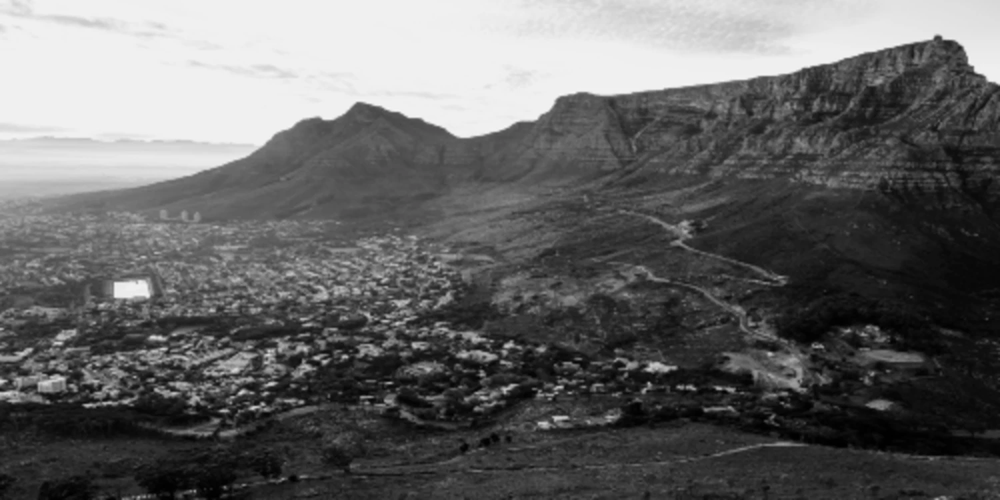

Data
Area: 2,445 sq km
Population: 4,772,846
Capital: Cape Town (legislative capital)
Languages: English, Afrikaans, isiXhosa
Currency: South African Rand (ZAR)
Time Zone: UTC+2
Calling Code: +27
Internet TLD: .za
Weather

Temperature: 17 °C
Conditions: Mostly Clear
Wind: 14 km/h
Wind Chill: N/A